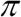
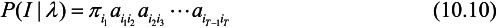
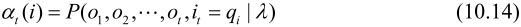
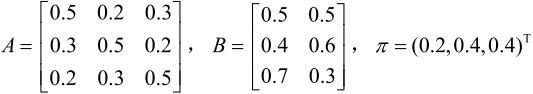
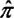
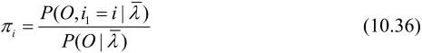
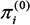
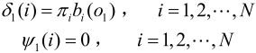

可以用三元符号表示，即
可以用三元符号表示，即第10章 隐马尔可夫模型
隐马尔可夫模型（hidden Markov model,HMM）是可用于标注问题的统计学习模型，描述由隐藏的马尔可夫链随机生成观测序列的过程，属于生成模型。本章首先介绍隐马尔可夫模型的基本概念，然后分别叙述隐马尔可夫模型的概率计算算法、学习算法以及预测算法。隐马尔可夫模型在语音识别、自然语言处理、生物信息、模式识别等领域有着广泛的应用。
10.1 隐马尔可夫模型的基本概念
10.1.1 隐马尔可夫模型的定义
定义10.1（隐马尔可夫模型） 隐马尔可夫模型是关于时序的概率模型，描述由一个隐藏的马尔可夫链随机生成不可观测的状态随机序列，再由各个状态生成一个观测而产生观测随机序列的过程。隐藏的马尔可夫链随机生成的状态的序列，称为状态序列（state sequence）；每个状态生成一个观测，而由此产生的观测的随机序列，称为观测序列（observation sequence）。序列的每一个位置又可以看作是一个时刻。
隐马尔可夫模型由初始概率分布、状态转移概率分布以及观测概率分布确定。隐马尔可夫模型的形式定义如下：
设Q是所有可能的状态的集合，V是所有可能的观测的集合。
其中，N是可能的状态数，M是可能的观测数。
I是长度为T的状态序列，O是对应的观测序列。
A是状态转移概率矩阵：
其中，
是在时刻t处于状态qi的条件下在时刻t+1转移到状态qj的概率。
B是观测概率矩阵：
其中，
是在时刻t处于状态qj的条件下生成观测vk的概率。
是初始状态概率向量：
其中，
是时刻t＝1处于状态qi的概率。
隐马尔可夫模型由初始状态概率向量、状态转移概率矩阵A和观测概率矩阵B决定。和A决定状态序列，B决定观测序列。因此，隐马尔可夫模型可以用三元符号表示，即
A,B,称为隐马尔可夫模型的三要素。
状态转移概率矩阵A与初始状态概率向量确定了隐藏的马尔可夫链，生成不可观测的状态序列。观测概率矩阵B确定了如何从状态生成观测，与状态序列综合确定了如何产生观测序列。
从定义可知，隐马尔可夫模型作了两个基本假设：
（1）齐次马尔可夫性假设，即假设隐藏的马尔可夫链在任意时刻t的状态只依赖于其前一时刻的状态，与其他时刻的状态及观测无关，也与时刻t无关。
（2）观测独立性假设，即假设任意时刻的观测只依赖于该时刻的马尔可夫链的状态，与其他观测及状态无关。
隐马尔可夫模型可以用于标注，这时状态对应着标记。标注问题是给定观测的序列预测其对应的标记序列。可以假设标注问题的数据是由隐马尔可夫模型生成的。这样我们可以利用隐马尔可夫模型的学习与预测算法进行标注。
下面看一个隐马尔可夫模型的例子。
例10.1（盒子和球模型） 假设有4个盒子，每个盒子里都装有红白两种颜色的球，盒子里的红白球数由表10.1列出。
表10.1 各盒子的红白球数
按照下面的方法抽球，产生一个球的颜色的观测序列：开始，从4个盒子里以等概率随机选取1个盒子，从这个盒子里随机抽出1个球，记录其颜色后，放回；然后，从当前盒子随机转移到下一个盒子，规则是：如果当前盒子是盒子1，那么下一盒子一定是盒子2，如果当前是盒子2或3，那么分别以概率0.4和0.6转移到左边或右边的盒子，如果当前是盒子4，那么各以0.5的概率停留在盒子4或转移到盒子3；确定转移的盒子后，再从这个盒子里随机抽出1个球，记录其颜色，放回；如此下去，重复进行5次，得到一个球的颜色的观测序列：
O＝{红,红,白,白,红}
在这个过程中，观察者只能观测到球的颜色的序列，观测不到球是从哪个盒子取出的，即观测不到盒子的序列。
在这个例子中有两个随机序列，一个是盒子的序列（状态序列），一个是球的颜色的观测序列（观测序列）。前者是隐藏的，只有后者是可观测的。这是一个隐马尔可夫模型的例子，根据所给条件，可以明确状态集合、观测集合、序列长度以及模型的三要素。
盒子对应状态，状态的集合是
Q＝{盒子1,盒子2,盒子3,盒子4}，N＝4
球的颜色对应观测。观测的集合是
V＝{红,白}，M＝2
状态序列和观测序列长度T＝5。
初始概率分布为
＝(0.25,0.25,0.25,0.25)T
状态转移概率分布为

观测概率分布为
10.1.2 观测序列的生成过程
根据隐马尔可夫模型定义，可以将一个长度为T的观测序列O＝(o1，o2,…,oT)的生成过程描述如下：
算法10.1（观测序列的生成）
输入：隐马尔可夫模型＝(A，B,)，观测序列长度T；
输出：观测序列O＝(o1，o2,…,oT)。
（1）按照初始状态分布产生状态i1
（2）令t＝1
（3）按照状态it的观测概率分布bit(k)生成ot
（4）按照状态it的状态转移概率分布{}产生状态it+1，it+1＝1,2,…,N
（5）令t＝t+1；如果t<T，转步（3）；否则，终止
10.1.3 隐马尔可夫模型的3个基本问题
隐马尔可夫模型有3个基本问题：
（1）概率计算问题。给定模型＝(A，B,)和观测序列O＝(o1，o2,…,oT)，计算在模型下观测序列O出现的概率P(O|)。
（2）学习问题。已知观测序列O＝(o1，o2,…,oT)，估计模型＝(A，B,)参数，使得在该模型下观测序列概率P(O|)最大。即用极大似然估计的方法估计参数。
（3）预测问题，也称为解码（decoding）问题。已知模型＝(A，B,)和观测序列O＝(o1，o2,…,oT)，求对给定观测序列条件概率P(I|O)最大的状态序列I＝(i1，i2,…,iT)。即给定观测序列，求最有可能的对应的状态序列。
下面各节将逐一介绍这些基本问题的解法。
10.2 概率计算算法
本节介绍计算观测序列概率P(O|)的前向（forward）与后向（backward）算法。先介绍概念上可行但计算上不可行的直接计算法。
10.2.1 直接计算法
给定模型＝(A，B,)和观测序列O＝(o1，o2,…,oT)，计算观测序列O出现的概率P(O|)。最直接的方法是按概率公式直接计算。通过列举所有可能的长度为T的状态序列I＝(i1，i2,…,iT)，求各个状态序列I与观测序列O＝(o1，o2,…,oT)的联合概率P(O，I|)，然后对所有可能的状态序列求和，得到P(O|)。
状态序列I＝(i1，i2,…,iT)的概率是

对固定的状态序列I＝(i1，i2,…,iT)，观测序列O＝(o1，o2,…,oT)的概率是P(O|I,)，

O和I同时出现的联合概率为
然后，对所有可能的状态序列I求和，得到观测序列O的概率P(O|)，即
但是，利用公式（10.13）计算量很大，是O(TNT)阶的，这种算法不可行。
下面介绍计算观测序列概率P(O|)的有效算法：前向-后向算法（forwardbackward algorithm）。
10.2.2 前向算法
首先定义前向概率。
定义10.2（前向概率） 给定隐马尔可夫模型，定义到时刻t部分观测序列为o1,o2,…,ot且状态为qi的概率为前向概率，记作

可以递推地求得前向概率at(i)及观测序列概率P(O|)。
算法10.2（观测序列概率的前向算法）
输入：隐马尔可夫模型，观测序列O；
输出：观测序列概率P(O|)。
（1）初值
（2）递推 对t＝1,2,…，T-1，
（3）终止
前向算法，步骤（1）初始化前向概率，是初始时刻的状态i1＝qi和观测o1的联合概率。步骤（2）是前向概率的递推公式，计算到时刻t+1部分观测序列为o1,o2,…,ot，ot+1且在时刻t+1处于状态qi的前向概率，如图10.1所示。在式（10.16）的方括弧里，既然at(j)是到时刻t观测到o1,o2,…,ot并在时刻t处于状态qj的前向概率，那么乘积at(j)aji就是到时刻t观测到o1,o2,…,ot并在时刻t处于状态qj而在时刻t+1到达状态qi的联合概率。对这个乘积在时刻t的所有可能的N个状态qj求和，其结果就是到时刻t观测为o1,o2,…,ot并在时刻t+1处于状态qi的联合概率。方括弧里的值与观测概率bi(ot+1)的乘积恰好是到时刻t+1观测到o1,o2,…,ot，ot+1并在时刻t+1处于状态qi的前向概率at+1(i)。步骤（3）给出P(O|)的计算公式。因为
所以
图10.1 前向概率的递推公式
如图10.2所示，前向算法实际是基于“状态序列的路径结构”递推计算P(O|)的算法。前向算法高效的关键是其局部计算前向概率，然后利用路径结构将前向概率“递推”到全局，得到P(O|)。具体地，在时刻t＝1，计算a1(i)的N个值(i＝1,2,…,N)；在各个时刻t＝1,2,…,T-1，计算at+1(i)的N个值(i＝1,2,…,N)，而且每个at+1(i)的计算利用前一时刻N个at(j)。减少计算量的原因在于每一次计算直接引用前一个时刻的计算结果，避免重复计算。这样，利用前向概率计算P(O|)的计算量是O(N2 T)阶的，而不是直接计算的O(TNT)阶。
图10.2 观测序列路径结构
例10.2 考虑盒子和球模型＝(A，B,)，状态集合Q＝{1,2,3}，观测集合V＝{红，白}，

设T＝3，O＝(红,白,红)，试用前向算法计算P(O|)。
解 按照算法10.2
（1）计算初值
（2）递推计算
（3）终止
10.2.3 后向算法
定义10.3（后向概率） 给定隐马尔可夫模型，定义在时刻t状态为qi的条件下，从t+1到T的部分观测序列为ot+1,ot+2,…,oT的概率为后向概率，记作
可以用递推的方法求得后向概率βt(i)及观测序列概率P(O|)。
算法10.3 （观测序列概率的后向算法）
输入：隐马尔可夫模型，观测序列O；
输出：观测序列概率P(O|)。
步骤（1）初始化后向概率，对最终时刻的所有状态qi规定βt(i)＝1。步骤（2）是后向概率的递推公式。如图10.3所示，为了计算在时刻t状态为qi条件下时刻t+1之后的观测序列为ot+1,ot+2,…,oT的后向概率βt(i)，只需考虑在时刻t+1所有
图10.3 后向概率递推公式
可能的N个状态qj的转移概率（即aij项），以及在此状态下的观测ot+1的观测概率（即bj(ot+1)项），然后考虑状态qj之后的观测序列的后向概率（即βt+1(j)项）。步骤（3）求P(O|)的思路与步骤（2）一致，只是初始概率i代替转移概率。
利用前向概率和后向概率的定义可以将观测序列概率P(O|)统一写成
此式当t＝1和t＝T-1时分别为式（10.17）和式（10.21）。
10.2.4 一些概率与期望值的计算
利用前向概率和后向概率，可以得到关于单个状态和两个状态概率的计算公式。
1．给定模型和观测O，在时刻t处于状态qi的概率。记
可以通过前向后向概率计算。事实上，
由前向概率at(i)和后向概率βt(i)定义可知：
于是得到：
2．给定模型和观测O，在时刻t处于状态iq且在时刻1t+处于状态qj的概率。记
可以通过前向后向概率计算：
而

所以
3．将 t(i)和
t(i)和 t(i,j)对各个时刻t求和，可以得到一些有用的期望值：
t(i,j)对各个时刻t求和，可以得到一些有用的期望值：
（1）在观测O下状态i出现的期望值
（2）在观测O下由状态i转移的期望值
（3）在观测O下由状态i转移到状态j的期望值
10.3 学习算法
隐马尔可夫模型的学习，根据训练数据是包括观测序列和对应的状态序列还是只有观测序列，可以分别由监督学习与非监督学习实现。本节首先介绍监督学习算法，而后介绍非监督学习算法——Baum-Welch算法（也就是EM算法）。
10.3.1 监督学习方法
假设已给训练数据包含S个长度相同的观测序列和对应的状态序列{(O1,I1),(O2,I2),…,(OS,IS)}，那么可以利用极大似然估计法来估计隐马尔可夫模型的参数。具体方法如下。
1．转移概率aij的估计
设样本中时刻t处于状态i时刻t+1转移到状态j的频数为Aij，那么状态转移概率aij的估计是
2．观测概率bj(k)的估计
设样本中状态为j并观测为k的频数是Bjk，那么状态为j观测为k的概率bj(k)的估计是
3．初始状态概率i的估计i为S个样本中初始状态为qi的频率
由于监督学习需要使用训练数据，而人工标注训练数据往往代价很高，有时就会利用非监督学习的方法。
10.3.2 Baum-Welch算法
假设给定训练数据只包含S个长度为T的观测序列{O1,O2,…,OS}而没有对应的状态序列，目标是学习隐马尔可夫模型＝(A，B,)的参数。我们将观测序列数据看作观测数据O，状态序列数据看作不可观测的隐数据I，那么隐马尔可夫模型事实上是一个含有隐变量的概率模型
它的参数学习可以由EM算法实现。
1．确定完全数据的对数似然函数
所有观测数据写成O＝(o1，o2,…,oT)，所有隐数据写成I＝(i1，i2,…,iT)，完全数据是(O,I)＝(o1，o2,…,oT,i1，i2,…,iT)。完全数据的对数似然函数是logP(O，I|)。
2．EM算法的E步：求Q函数(,)[1]
其中，是隐马尔可夫模型参数的当前估计值，是要极大化的隐马尔可夫模型参数。
于是函数Q(,)可以写成：
式中求和都是对所有训练数据的序列总长度T进行的。
3．EM算法的M步：极大化Q函数Q(,)求模型参数A,B,
由于要极大化的参数在式（10.34）中单独地出现在3个项中，所以只需对各项分别极大化。
（1）式（10.34）的第1项可以写成：

注意到i满足约束条件，利用拉格朗日乘子法，写出拉格朗日函数：

对其求偏导数并令结果为0
得
对i求和得到

代入式（10.35）即得

（2）式（10.34）的第2项可以写成
类似第1项，应用具有约束条件的拉格朗日乘子法可以求出
（3）式（10.34）的第3项为
同样用拉格朗日乘子法，约束条件是。注意，只有在ot＝vk时bj(ot)对bj(k)的偏导数才不为0，以I(ot＝vk)表示。求得
10.3.3 Baum-Welch模型参数估计公式
将式（10.36）～式（10.38）中的各概率分别用t(i)，t(i,j)表示，则可将相应的公式写成：
其中，t(i)，t(i,j)分别由式（10.24）及式（10.26）给出。式（10.39）～式（10.41）就是Baum-Welch算法（Baum-Welch algorithm），它是EM算法在隐马尔可夫模型学习中的具体实现，由Baum和Welch提出。
算法10.4（Baum-Welch算法）
输入：观测数据O＝(o1，o2,…,oT)；
输出：隐马尔可夫模型参数。
（1）初始化
对n＝0，选取，，，得到模型(0)＝(A(0),B(0),(0))。
（2）递推。对n＝1,2,…，
右端各值按观测O＝(o1，o2,…,oT)和模型(n)＝(A(n),B(n),(n))计算。式中t(i)，t(i,j)由式（10.24）和式（10.26）给出。
（3）终止。得到模型参数(N+1)＝(A(N+1),B(N+1),(N+1))。
10.4 预测算法
下面介绍隐马尔可夫模型预测的两种算法：近似算法与维特比算法（Viterbi algorithm）。
10.4.1 近似算法
近似算法的想法是，在每个时刻t选择在该时刻最有可能出现的状态，从而得到一个状态序列I*＝(，,…,)，将它作为预测的结果。
给定隐马尔可夫模型和观测序列O，在时刻t处于状态qi的概率t(i)是
在每一时刻t最有可能的状态是
从而得到状态序列I*＝(，,…,)。
近似算法的优点是计算简单，其缺点是不能保证预测的状态序列整体是最有可能的状态序列，因为预测的状态序列可能有实际不发生的部分。事实上，上述方法得到的状态序列中有可能存在转移概率为0的相邻状态，即对某些i,j，aij＝0时。尽管如此，近似算法仍然是有用的。
10.4.2 维特比算法
维特比算法实际是用动态规划解隐马尔可夫模型预测问题，即用动态规划（dynamic programming）求概率最大路径（最优路径）。这时一条路径对应着一个状态序列。
根据动态规划原理，最优路径具有这样的特性：如果最优路径在时刻t通过结点，那么这一路径从结点到终点的部分路径，对于从到的所有可能的部分路径来说，必须是最优的。因为假如不是这样，那么从到就有另一条更好的部分路径存在，如果把它和从到达的部分路径连接起来，就会形成一条比原来的路径更优的路径，这是矛盾的。依据这一原理，我们只需从时刻t＝1开始，递推地计算在时刻t状态为i的各条部分路径的最大概率，直至得到时刻t＝T状态为i的各条路径的最大概率。时刻t＝T的最大概率即为最优路径的概率P*，最优路径的终结点也同时得到。之后，为了找出最优路径的各个结点，从终结点开始，由后向前逐步求得结点,…,，得到最优路径I*＝(，,…,)。这就是维特比算法。
首先导入两个变量 和Ψ。定义在时刻t状态为i的所有单个路径(i1，i2,…,it)中概率最大值为
和Ψ。定义在时刻t状态为i的所有单个路径(i1，i2,…,it)中概率最大值为
由定义可得变量的递推公式：
定义在时刻t状态为i的所有单个路径(i1，i2,…,it-1,i)中概率最大的路径的第t-1个结点为
下面介绍维特比算法。
算法10.5（维特比算法）
输入：模型＝(A，B,)和观测O＝(o1，o2,…,oT)；
输出：最优路径I*＝(，,…,)。
（1）初始化

（2）递推。对t＝2,3,…,T
（3）终止
（4）最优路径回溯。对t＝T-1,T-2,…,1
求得最优路径I*＝(，,…,)。
下面通过一个例子来说明维特比算法。
例10.3 例10.2的模型＝(A，B,)，
已知观测序列O＝(红,白,红)，试求最优状态序列，即最优路径I*＝(，，)。
解 如图10.4所示，要在所有可能的路径中选择一条最优路径，按照以下步骤处理：
图10.4 求最优路径
（1）初始化。在t＝1时，对每一个状态i，i＝1,2,3，求状态为i观测o1为红的概率，记此概率为1(i)，则
代入实际数据
记Ψ1(i)＝0，i＝1,2,3。
（2）在t＝2时，对每个状态i，i＝1,2,3，求在t＝1时状态为j观测为红并在t＝2时状态为i观测o2为白的路径的最大概率，记此最大概率为2(i)，则
同时，对每个状态i，i＝1,2,3，记录概率最大路径的前一个状态j：
计算：
同样，在t＝3时，

（3）以P*表示最优路径的概率，则
最优路径的终点是：

（4）由最优路径的终点，逆向找到,：
于是求得最优路径，即最优状态序列I*＝(,,)＝(3,3,3)。
本章概要
1．隐马尔可夫模型是关于时序的概率模型，描述由一个隐藏的马尔可夫链随机生成不可观测的状态的序列，再由各个状态随机生成一个观测而产生观测的序列的过程。
隐马尔可夫模型由初始状态概率向量、状态转移概率矩阵A和观测概率矩阵B决定。因此，隐马尔可夫模型可以写成＝(A，B,)。
隐马尔可夫模型是一个生成模型，表示状态序列和观测序列的联合分布，但是状态序列是隐藏的，不可观测的。
隐马尔可夫模型可以用于标注，这时状态对应着标记。标注问题是给定观测序列预测其对应的标记序列。
2．概率计算问题。给定模型＝(A，B,)和观测序列O＝(o1，o2,…,oT)，计算在模型下观测序列O出现的概率P(O|)。前向-后向算法是通过递推地计算前向-后向概率可以高效地进行隐马尔可夫模型的概率计算。
3．学习问题。已知观测序列O＝(o1，o2,…,oT)，估计模型＝(A，B,)参数，使得在该模型下观测序列概率P(O|)最大。即用极大似然估计的方法估计参数。Baum-Welch算法，也就是EM算法可以高效地对隐马尔可夫模型进行训练。它是一种非监督学习算法。
4．预测问题。已知模型＝(A，B,)和观测序列O＝(o1，o2,…,oT)，求对给定观测序列条件概率P(I|O)最大的状态序列I＝(i1，i2,…,iT)。维特比算法应用动态规划高效地求解最优路径，即概率最大的状态序列。
继续阅读
隐马尔可夫模型的介绍可见文献[1,2]，特别地，文献[1]是经典的介绍性论文。关于Baum-Welch算法可见文献[3,4]。可以认为概率上下文无关文法（probabilistic context-free grammar）是隐马尔可夫模型的一种推广，隐马尔可夫模型的不可观测数据是状态序列，而概率上下文无关文法的不可观测数据是上下文无关文法树[5]。动态贝叶斯网络（dynamic Bayesian network）是定义在时序数据上的贝叶斯网络,它包含隐马尔可夫模型，是一种特例[6]。
习题
10.1 给定盒子和球组成的隐马尔可夫模型＝(A,B,)，其中，
设T＝4，O＝(红,白,红,白)，试用后向算法计算P(O|)。
10.2 考虑盒子和球组成的隐马尔可夫模型＝(A,B,)，其中，
设T＝8，O＝(红,白,红,红,白,红,白,白)，用前向后向概率计算P(i4＝q3|O,)。
10.3 在习题10.1中，试用维特比算法求最优路径I*＝(，，，)。
10.4 试用前向概率和后向概率推导
10.5 比较维特比算法中变量的计算和前向算法中变量a的计算的主要区别。
参考文献
[1] Rabiner L,Juang B. An introduction to hidden markov Models. IEEE ASSP Magazine,January 1986
[2] Rabiner L. A tutorial on hidden Markov models and selected applications in speech recognition. Proceedings of IEEE,1989
[3] Baum L,et al. A maximization technique occuring in the statistical analysis of probabilistic functions of Markov chains. Annals of Mathematical Statistics,1970,41: 164–171
[4] Bilmes JA. A gentle tutorial of the EM algorithm and its application to parameter estimation for Gaussian mixture and hidden Markov models. http://ssli.ee.washington.edu/~bilmes/mypubs/ bilmes1997-em.pdf
[5] Lari K,Young SJ. Applications of stochastic context-free grammars using the Inside-Outside algorithm,Computer Speech & Language,1991,5(3): 237–257
[6] Ghahramani Z. Learning Dynamic Bayesian Networks. Lecture Notes in Computer Science,Vol. 1387,1997,168–197
注释
[1] 按照Q函数的定义
Q(,)＝EI[logP(O，I|)|O, ]
式（10.33）略去了对而言的常数因子1/P(O|)。